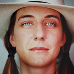
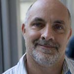
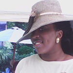
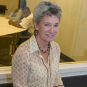
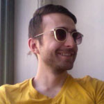
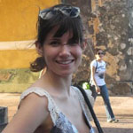

Content Developer for Biological and Social Justice Perspectives
Principle Investigator of NYSTEM Contract # C026077
Katayoun is an Associate Professor of Biology at Eugene Lang College The New School for Liberal Arts and a Leadership Fellow for Science Education for New Civic Engagements and Responsibilities (SENCER). She received her Ph.D. in Cell and Molecular Biology from UC Berkeley and her present scholarship is centered on developing science and social justice curricula that include resources and support for educators and learners. She utilizes visual thinking strategies and the flipped classroom format to establish inclusive learning environments, and critical pedagogy to highlight the ways that biological applications can lead to positive change in society. She received the University Distinguished Teaching Award at the New School, is an Expert Case Developer for the National Center for Case Study Teaching in Science, and an ad-hoc reviewer for CBE/Life Sciences Education. She has been involved in stem cell education for over 15 years, and is a contributor to the NSF-funded Workforce in Stem Cell Research curricular project. She is currently working on health education projects that incorporate information design to inform decision-making. She is the author of the HeLa Cells & HPV Genes: Immortality & Cancer Module and case study, coauthor of Eggs & Blood: Gifts & Commodities Module and case study, co- author of the Disease, Disability, and Immortality: Hope & Hype Module, co-author of the Stem Cells & Policy: Values and Religion Module, co-creator of the Sources of Stem Cells Radial Infographic and Detailed Sheets, co-creator of the Powerpoint Slide Sets, co-creator of the Timelines, and co-creator of the They Called Me HeLa Video.

Julia Wargaski
Information Designer and Illustrator
Julia Wargaski is an Assistant Professor of Communication Design, Parsons The New School for Design, The School of Art, Media and Technology specializing in information design and design methodologies. As Art Director, Information Designer and Illustrator, Julia collaborated with content and content flow creators, Katayoun Chamany and Lianna Schwartz-Orbach, to co-create the Sources of Stem Cells Radial Infographic and the eleven related Detailed Sheets. Julia transformed biotechnological processes associated with stem cell research into intuitive information design narratives that highlight the historical development of each source of stem cells and its associated therapeutic and scientific potential -- information design as educational tools. She contributed Art Direction, Design and Co-development of educational materials for Princeton Nonviolent Communication (NVC) and Application, Information and Visual design for the Ripple, Explore and Map views in the Shape of Change online archive in collaboration with Melanie Crean. She was Co-author, Art Director, and Information Designer for development of the "Trees of Trade: Biodiversity and Extinction" educational game interface visualizations and transitions showing progression of information design narrative and how to 'play' the data, based off of Katharina Seifert's "Effects of Trade: Endangered Species of the Atlantic Rainforest", and in collaboration with Katharina Seifert, Preethi Chethan and Mike Edwards -- in conjunction with Dataplay/Parsons PETLab (Prototyping, Education, and Technology lab). Some Additional Clients include: Delaware Valley Farm Study Center for Sustainable Living, Town & Country Magazine, Worth Magazine, Martha Stewart Living Omnimedia, House & Garden Magazine, and Alexander Isley Design.
Adrienne Asch
Content Developer for Bioethical and Disability Perspectives
Adrienne is the director of The Center for Ethics at Yeshiva University and Edward and Robin Milstein Professor of Bioethics and Professor of Epidemiology & Population Health. She has contributed to the SCAC project with expertise in the area of Disability Studies, Bioethics, and Law. She is the co-editor of The Double-Edged Helix: Social Implications of Genetics in a Diverse Society. Her experience as a member of the New York Task Force on Life and the Law and past board member of the American Civil Liberties Union informed our perspectives on procedural justice and the shifting nature of policies regarding reproductive and genetic technologies. Her contributions were vital in shaping the tone of the Eggs & Blood: Gifts & Commodities Module, and she is coauthor of the Disease, Disability, and Immortality: Hope & Hype Module, and co-author of Stem Cells & Policy: Values & Religion Module.

Michael Pettinger
Content Developer for Religious Perspectives
Michael is an Assistant Professor of Literature and Religious Studies at Eugene Lang College The New School for Liberal Arts. He received his Ph.D. in Comparative Literature from the University of Washington and his contributions to the SCAC project are in the area of philosophy and religion. He is co-author of the Stem Cells & Policy: Values & Religion Module and participated as a guest discussant in the Stem Cells and Social Justice course, which informed the development of SCAC learning activities. He is a regular contributor of the Huffington Post and is currently working on an Augustinian theology for queer Christians.

Charnell Covert
Playwright, Director, & Actor (Henrietta Lacks, Scene: They Called Me HeLa) in Healing
Charnell is a Sociology and Culture Adjunct Professor in the African-American Studies Department at CUNY New York City College of Technology and a working artist and executive director of her own social justice and womanist performance and education consulting firm, Covert Consulting. She graduated with a BA in Literature from Eugene Lang College The New School for Liberal Arts with honors. Her participation on the SCAC project grew from her experience as a student registered in the course Stem Cells and Social Justice where she learned of the story of Henrietta Lacks. She proposed a play to bring this and other stories of health inequity to the fore, and received a national fellowship “Developing Leadership in Black Women’s Health Scholarship” to pursue her Master’s of Arts in Women’s Health at Suffolk University graduating in 2010 with honors. Healing is a full-length multi-media and multi-art play based on interviews with Black women directly affected by HIV/AIDS, sickle cell anemia, weight, and chronic illnesses. The play situates their health narratives as exemplars of the current racist and sexist health disparities faced by Black Women living in America beginning with Henrietta Lacks. An excerpt of her full-length play Healing titled “They Called Me HeLa” is posted on our Media page, and she can be contacted about scheduling a performance.
Chelsea Briganti
Product Designer of Mademoicell
Chelsea Briganti graduated from Parsons School of Design in 2010 with a BFA in Product Design. Her contribution to the SCAC project includes Mademoicell, a device that collects menstrual stem cells for storage and retrieval, which appears in the Radial Infographic on Sources of Stem Cells and the Adult Blood Detailed Sheet and is highlighted in the HeLa Cells & HPV Genes: Immortality & Cancer and Eggs & Blood: Gifts & Commodities Modules. Chelsea worked with stem cell researchers, gynecologists, and women to design a device that promotes public banking of menstrual blood stem cells and serves as an alternative to costly private banking. Chelsea is the co-founder of the social innovation think tank called The Way We See The World that has produced a body of work encompassing sustainable toys, biodegradable edible cups, and hydrating superfood for aging populations. Chelsea envisions designers as agents of change and fundamentally believes in the cross-pollination of ideas and resources, as well as the exciting, translational space where design converges with science. Her work is currently featured at the MoMA Design Store, and publications include Wired, TIME Magazine, Wall Street Journal, New York Times Magazine and Fast Company.

Wendy Newstetter
Assessment of Student Learning
Wendy is the Director of Educational Research and Innovation Sciences Research for the College of Engineering at Georgia Tech. With expertise and experience in learning sciences research, Wendy’s contribution to the SCAC project was in the area of assessment of student learning. She has been an active member of Project Kaleidoscope, a science education reform organization, and she was named one of the Top 20 Science and Engineering Professors in Georgia for her contributions to STEM education. She is also co-author of Science as Psychology- Sense-Making and Identity in Science, which won the William James Book Award in 2012. She is also the coPrinciple Investigator for the Cognition and Learning in Interdisciplinary Cultures project which is supported by NSF and the National Endowment for the Humanities.
Ann Snitow
Consultant, Gender Perspectives
Ann is an Associate Professor of Literature of Eugene Lang College The New School for Liberal Arts and served as the director of The New School Gender Studies Program for ten years. She has contributed to the SCAC project in the area of Feminism and Assisted Reproductive Technologies and informed the development of learning resources for the Eggs & Blood: Gifts & Commodities Module, and implemented portions of this module into her University Lecture Course “Feminist Thought and Action.” A renowned feminist activist and writer she is a Fulbright Specialist in Gender and American Studies and promotes linkages between U.S. academics and activists and their counterparts overseas. She is the founder of the Network of East-West Women, a communications network linking more than 1,000 women’s advocates in 30 countries. She is also a recipient of the University Distinguished Teaching Award at the New School.
Lisa Rubin
Consultant, Gender, Social Justice
and Health Psychology Perspectives
Lisa is an Associate Professor of Psychology and Assistant Director of Clinical Training at The New School for Social Research, and Chair of the New School for Public Engagement’s undergraduate Psychology program. She has contributed to the SCAC project in the areas of feminism, social justice, and health psychology, which informed the larger SCAC project and the Eggs & Blood: Gifts & Commodities Module. She provided valuable input on student learning as an observer of early pilots of the roleplay activities associated with this module, and received the University Distinguished Teaching Award at the New School. She is currently working on projects addressing body image, health disparities and reproductive health, has published widely in a number of peer-reviewed journals, and is on the editorial board of the journal Women’s Reproductive Health.
Tyler Cutforth
Copy Editor and Consultant
Tyler Cutforth received his Ph.D. in Genetics from UC Berkeley and is currently a freelance science writer and grant writer with twenty years of experience in the life sciences. He has also been involved in stem cell education and co-developed, implemented, and assessed the NSF-funded Workforce in Stem Cell Research curricular project at Stanford University and San Francisco State University.

Mani Nilchiani
Website Designer and Developer
Mani Nilchiani graduated with a MFA in Design and Technology from Parsons School of Design. His contributions to the SCAC project make our project visible and accessible. His expertise and creativity played a vital role in the design, organization, and interactivity of the website.
Warren Balinsky
Consultant, Healthy Policy Perspectives
Warren was an Associate Professor and Former Chair of the Health Services Management Program at the Milano School for Management and Urban Policy. His contributions to the SCAC project included references in health policy and the piloting of portions of the Disease, Disability, & Immortality: Hope & Hype and Stem Cells & Policy: Values & Religion Modules in his independent study course. His research assistants Elizabeth Ziff and Amita Hoktar, provided literature research support and analysis of contemporary issues related to stem cell research policy.
Student Research Assistants
Alexa Riggs
Content Developer and Science Education Researcher
Alexa earned a BA in Interdisciplinary Science and Psychology, and a minor in Gender Studies from Eugene Lang College The New School for Liberal Arts. Her participation on the SCAC project involved content development for many pieces of the curriculum and More specifically, she provided Timelines content and design, and is co-author of the Eggs & Blood: Gifts & Commodities Module and Case Study where her feminist perspective and interdisciplinary approach proved vital. She served as a Science Fellow for the University Lecture Course Immortality and Immorality: Stem Cells and Social Justice and analyzed student work to assess student learning and usability of the curricular materials and has presented this work at international conferences, received the Interdisciplinary Science Outstanding Senior Award, and four other student awards centered on humanitarian action and social justice. She currently works at Beth Israel Medical Center as a Research Program Manager for a clinical trial addressing pain management in cancer patients. She intends to complete a MPH with a focus on social epidemiology.
Emmanuel Nunez
Designer, Illustrator, and Animator
Emmanuel is a junior in Fashion Design at Parsons The New School for Design. His participation on the SCAC project involved design, illustration, and animation of Power Point Slide Sets, figures for the Primers for each module, and the Timelines. His keen sense of what is salient allows our materials to reach a diverse set of learners and his attention to time and space animates biology in meaningful ways and transforms our teaching.
Lianna Schwartz-Orbach
Content, Content Flow, and Design Researcher
Lianna earned a BA in Interdisciplinary Science and minor in Gender Studies from Eugene Lang College The New School for Liberal Arts and received the Interdisciplinary Science Outstanding Senior Award. Her participation on the SCAC project grew from her experience as a student registered in the course Stem Cells and Social Justice. As an upperclassman she contributed to SCAC as an educational consultant by serving as a Science Fellow for the 2011 version of the stem cells course and consolidating the content of this course for the scale-up to a University Lecture course in 2012. Her insight in organizing content, content flow, and design for much of the SCAC project proved essential. She is co-author of Powerpoint Slide Sets, Radial Infographic for Sources of Stem Cells and the associated Detailed Sheets. Her dedication to this project has resulted in continued support long after graduation and her keen eye for hierarchy has been essential for the integration of design for complex biological concepts and principles. She currently volunteers at The Sylvia Rivera Law Project and is exploring post-graduate plans centered on social justice.
Nona Griffin
Content, Content Flow, and Design Researcher
Nona earned a BA in Interdisciplinary Science from Eugene Lang College The New School for Liberal Arts and also received the Interdisciplinary Science Outstanding Senior Award. Her participation on the SCAC project grew from her experience as a freshman student registered in the course Stem Cells and Social Justice. As an upperclassman, she contributed to SCAC as an administrative assistant and educational consultant, recording and reflecting on students’ learning during class sessions and Chamany’s teaching. Later coined, “Nona’s Notes”, these observations in the classroom became a primary resource in transforming this course into a university lecture course launched in Spring 2013 and her Senior Research Proposal on Visualization in Science informed the design and content of SCAC infographics and animations. She is pursuing her interest in science communication, and is a studio producer at inVentiv Health Creative Studios overseeing digital and print projects created for healthcare PR firms and a freelance science writer reporting on DIY science and bioart for publications such as PopSci and Scientific American.
Katie McGreevey and Ariel Merkel
Education Researcher
Katie and Ariel served as graduate student teaching assistants for the University Lecture Course Immortality and Immorality: Stem Cells and Social Justice and implemented SCAC materials and provided vital feedback on userability and students learning. In this capacity they recorded student learning outcomes, assisted in the development of review questions and grading rubrics, and provided class notes on student learning and teaching. Their contributions to the scale-up efforts of transforming a course for undergraduate liberal arts students in a seminar format to a university lecture catering to Parsons Design students was instructive and reshaped many of our approaches.

Astrid Vallens
Content Developer and Writer
Astrid earned a BA in Interdisciplinary Science from Eugene Lang College The New School for Liberal Arts and also received the Interdisciplinary Science Outstanding Senior Award. Her participation on the SCAC project grew from her experience as a science student repeatedly coming across the story of Henrietta Lacks in numerous courses. Her final papers in many courses were intimately tied to the basic biological concepts associated with the HeLa cell line: telomerase, cell culture and contamination, HPV, and cancer. Sections of these papers were used to build the Primer for the HeLa Cells & HPV Genes: Immortality & Cancer Module and also informed our desire to create Timelines for this curriculum. She is currently in nursing school.
Eric MacPhail
Education and Philosophy Researcher
Eric earned a BA in Economics and Philosophy from Eugene Lang College The New School for Liberal Arts and also completed a MA in Economics at the New School for Social Research. He contributed to SCAC as an educational consultant, recording and reflecting on students’ learning during class sessions and appropriate pedagogies. He also contributed book and film reviews, summaries, timelines, and annotations for references for the Stem Cells & Policy: Values & Religion Module.
Saffo Papantonopoulou
Education Researcher
Saffo is earning a MA in Anthropology from The New School for Social Research and holds a BA in STS from Brown University. She contributed to SCAC as an educational consultant, recording and reflecting on students’ learning during class sessions and appropriate pedagogies. She also contributed book reviews and summaries for the Stem Cells & Policy: Values & Religion Module.
Steven Houang
Copy Editor and Consultant
Steven earned a BA in Interdisciplinary Science from Eugene Lang College The New School for Liberal Arts and has a strong commitment to social justice. His organizational skills proved vital in designing the style sheets for editing and providing a uniform look to the products.
Lauren Gibbons
Website Research Assistant
As a graduate student in the Design + Technology MFA Program at Parsons, Lauren worked on initial phases of website development. As IT Consultant Lauren joined START in July 2008 after graduating from the College of Charleston, with a Bachelor of Science in International Business and a French minor. Prior to START, she worked with an advertising and graphic design group in Montréal, Canada. Lauren recently obtained a Master of Fine Arts in Design + Technology from Parsons The New School for Design and has worked on projects involving website design, print publications, information graphics, and video production
Rhiannon Fox
Communication Design Research Assistant
As an undergraduate in the Communication Design BFA program at Parsons, Rhiannon compiled, as a reference for the team, rough timeline comparisons based off of SCAC's initial resources list. Rhiannon Fox is a New York based graphic designer with a strong love for data visualization. Originally from Bermuda she earned her Bachelor of Fine Arts degree in Communication Design at Parsons the New School for Design. She is currently an Infographics Analyst for infographics and information design for CFA Institute in New York City.